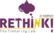

Campus Dashboard
One feed for every event at IIT Roorkee.
Thomso, Cognizance, club workshops, guest lectures and registration deadlines. Posted by the people running them, sorted by the clubs you actually follow.
Free with your Channel-i login. Works in a browser or on your home screen.
The same four events, told to you six different ways.
A forward of a forward. A story that expired overnight. A poster you walked past on Tuesday. A form that closed on Friday. Keep scrolling and watch them collapse into one line each.
feedfor all of it
Everything on campus, collected.
One login. Every club, every fest, every deadline, and the academic calendar underneath all of it.
Ranked by the clubs you follow.
Not by whoever posted most recently. Every event carries its club and its category, so the feed can be filtered down to the parts of campus you actually turn up to.
Straight from the institute's calendar.
It begins with the academic calendar the institute publishes, and lays the events over it. The month gives you the holidays and the exam weeks at a glance, and tapping a day opens everything on it.
You choose whose events reach you.
Every society on campus is on by default. Uncheck the ones you do not care about and their events stop appearing in your feed. Change it whenever you like.
It remembers so you don't.
An inbox keeps everything that has already fired: a talk starting within the hour, three new notices from your clubs, a todo due today. Tap one and it opens the thing itself.
Next to it, the reminder hub — your own timing on every event and every notice deadline you are watching. A day before applications close, an hour before a talk. It arrives with the app shut, and nothing else does.
Try the whole thing.
This is the actual app, running right here with no login. Filter the feed, search it, set a reminder and pick your offsets, move through the calendar, add a todo, follow and mute clubs. Everything works.
Then open the real thing with your Channel-i login.
Stop missing out on stuff.
One feed for every event at IIT Roorkee. Free for anyone with a Channel-i login, and about ninety seconds to set up.
